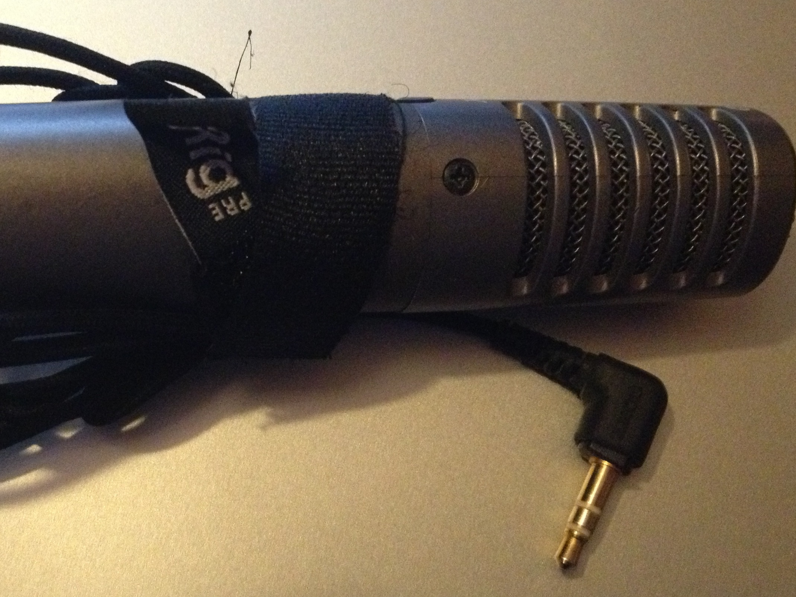
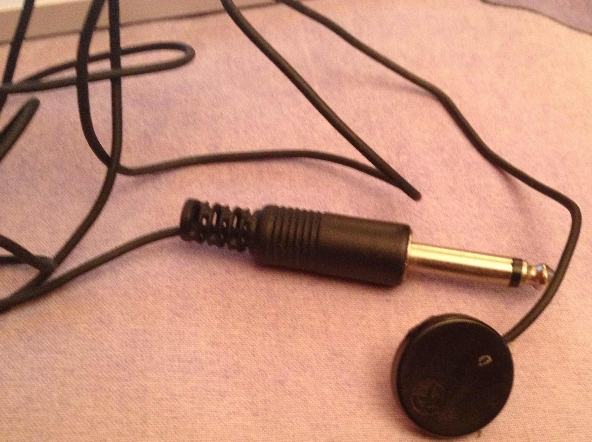
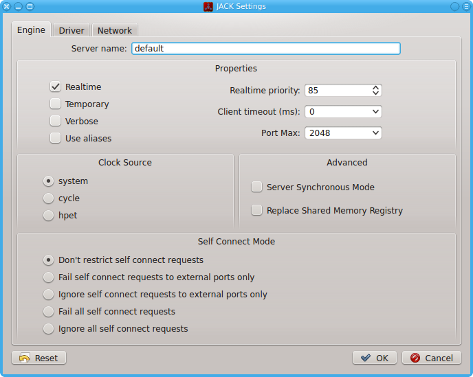
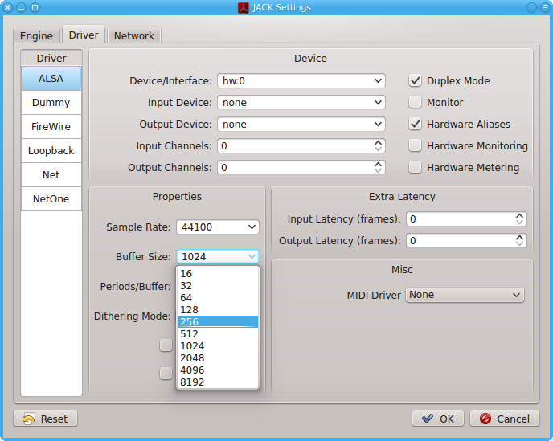
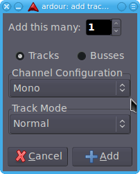
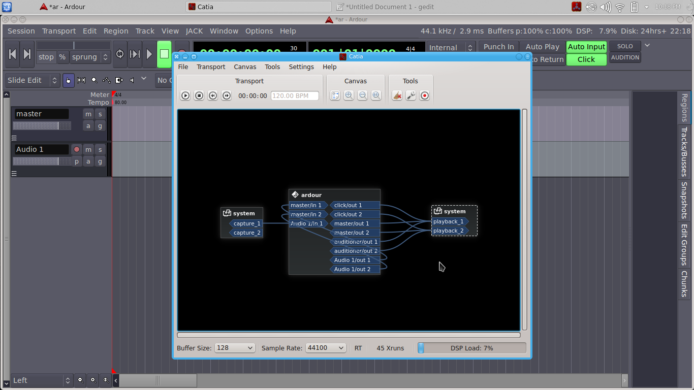
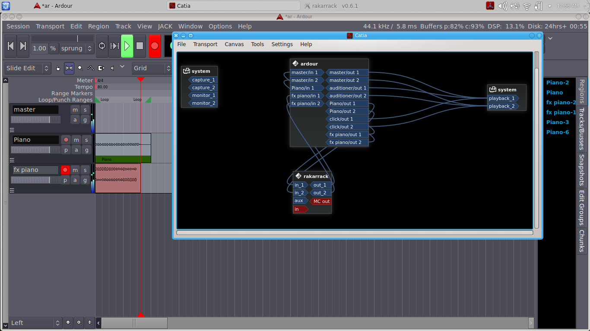

3, 2, 1! Kayıttayız! - Ardour
Ardour, canlı enstrüman ve vokal kaydı yapmamızı sağlayan bir araç. Nasıl yapılacağını merak ediyorsanız yazımıza buyurun.

Merhabalar. Bu yazıda Ardour’la canlı enstrüman ve vokal kaydının nasıl yapılacağını anlatacağım. Önce tavsiyeler:
- En önemlisi, bilgisayarınızın kulaklık girişine bir kulaklık bağlayın ve kayıt bitip Ardour’u kapatana kadar çıkarmayın. Çıkarmak istediğinizde kulağınızdan çıkarın, jack’ı takılı kalsın. Aksi takdirde (özellikle “rackarrak” benzeri efektler açıkken) beklemediğiniz bir anda hoparlörleri yakacak kadar yüksek geri besleme (feedback) yapabilir. Ayrıca kaydı yaparken kulaklık kullanmak, mikrofonun hoparlörden çıkan sesi de kayda eklemesinin önüne geçer.
- Güç tasarrufu, ekran koruması tarzı uygulamaları iptal edin.
- İmkân varsa, ses kaydı için sistem diskinden farklı bir disk (farklı bir bölüm değil) kullanın. Özellikle dizüstü bilgisayarların sabit diskleri 5-10 kanaldan fazla kayıt yapmak için yeterince hızlı değil.
- Mikrofon kullanacaksanız sessiz bir ortamda, tercihen gecenin bir yarısı yapın kaydı. Gece hem sessiz olur hem de ilham perileri uçuşur etrafta.
Şu notu da ekleyelim:\
jack: Kulaklık, mikrofon vs kabloların bilgisayara giren ucu.
JACK: Program adı.
İlk olarak donanımsal bağlantılardan başlayalım:
Temel olarak üç farklı seviyede analog ses girişi vardır. Bunlar:
Nadiren, kimi durumlarda bilgisayarda hiçbir analog giriş bulunmaz. Bu durumda harici ekipman(lar) almaktan başka çare yok.
“USB ses kartı” veya manyetikli sazlar için “6.5 mm jack to usb”, mikrofon için “XLR female to USB” gibi google aramalarıyla ilgili ürünler bulunabilir.
3.5 mm, mikrofon girişinden ses alacağımıza göre bilgisayara giren uç şu şekilde olacak:

Şunun gibi bir mikrofon bağlayacaksak sorun yok, girişi uyumlu, tak çalıştır.

Ama örneğin akustik saza yapıştırılan manyetik kullanacaksak 6.3 mm jack’ı 3.5 mm’ye dönüştürmek için biraz kablo katliamı yapmamız gerekecek.


Burada kırmızı uç Ardour input 1, beyazı Ardour input 2 (ya da tersi, jack’ın içini açmadan bilemeyiz. En uç sol, ortadaki alan sağ, plastiğin en yakınında kalan kısım da şasedir.). Renkli kablolar canlı, sesi bunlar aktarıyor, metal olan ise şasedir. Kırmızı ve beyazı birleştirip ucu mono yapıyoruz.

Böylece bizim mono sinyal hem input 1’e hem de input 2’ye gidecek.

Peki kolay yoldan bir “6.3 mm’den 3.5 mm’ye dönüştürücü” alıp işi hâlletmek varken konuyu niye uzatıyorum? Çünkü sinyal akışını bilmek bize esneklik sağlar. Diyelim iki kişi aynı anda çalmak ve farklı kanallara kayıt yapmak istiyor. Bu durumda kırmızı kablo + şase ilk enstrümana, beyaz + şase ikinciye bağlanacak.
Tuşlu (synth gibi) çalgıların çıkışı line seviyesidir, mikrofon girişi için çok yüksek. Aletin kulaklık çıkışından ses alıp sesi düşerek bu sinyali kaydedebiliriz (Biraz dip ses olur.).
Gitar, bas ya da akustik enstrümanlara yapıştırılan manyetiklerin sesi de mikrofon girişine fazla gelecek. Ses ayarı varsa (gitar/bass gibi) enstrümandan, yoksa (yapıştırma manyetik gibi) alsa mixer mic girişinden sesi düşürün. Yine dip ses olabilir biraz, yapacak bir şey yok, mikrofon girişini her şey için kullanmaya çalışıyoruz. Makul seviyedeki dip ses ve gürültüye katlanacağız.
Ubuntu üzerinde ses programlarını verimli bir şekilde kullanabilmek ve özellikle kayıtta yaşanan gecikmeyi azaltmak için buna uygun çekirdeği (realtime veya low latency kernel) yüklemek gerekiyor.
Sesteki bu gecikme;
Çeşitli firmaların sürücülerle (Asio, CoreAudio vs), stüdyoların donanımla (mixer’den bir çıkış göndererek), ses kartı üreticilerinin orta üzeri ürünlerine eklediği “direct monitoring” özelliği ile (bunun mantığı mixer’den çıkış göndermekle aynı) aşmaya çalıştığı bu sorunu aşmak için, geliştiriciler Linux çekirdeğini optimize etmeyi tercih etmiş. Sonuç sürücülerle sağlanan sonuçla hemen hemen aynı; donanımsal olan (mixer veya kart) elbette kesin çözüm.
Burada Ardour’un ses kartlarının sağladığı “direct monitoring” özelliğini (diğer bütün pro ses yazılımları gibi) desteklediğini de eklemek gerekiyor.
Ben çekirdek derleme/yükleme, depo ekleme vs. işlerini benden iyi bilenlere bırakıp bu iş için hazırlanmış dağıtımları kullanmayı tercih ediyorum.
Ubuntu-Studio, AV Linux, DreamStudio, Arch Pro Audio vs. çeşitli seçenekler mevcut, benim kullandığım KXStudio. Dolayısıyla anlatımı bu dağıtım üzerinden yapıyorum. Sizin dağıtımda eksik programlar varsa, KXStudio depolarını ekleyebilirsiniz.
(http://kxstudio.sourceforge.net/KXStudio:Repositories)
Kayıttan önce yapmamız gereken, işletim sistemini bilgisayarın kaldırabileceği minimum gecikmeye ayarlamak. Bunu bilgisayar açıldığında otomatik olarak stüdyo oturumu açan “cadence” üzerinden yapacağız.

“Auto-start JACK or LADISH” kutusu tıklı değilse tıklayın. Bilgisayar açıldığında kayda hazır olsun, her açışta ayarla mayarla uğraşmayalım.
Daha sonra cadence’i “stop” ile durdurup “configure” diyoruz. “Engine” bölümünde “Realtime” tıklı değilse tıklıyoruz.

“Driver” bölümünde “Buffer Size” öntanımlı olarak 1024 olarak geliyor. Bu, girilen sesi 23 ms sonra duyacağız demek. Bu kadar gecikmeli duyumla düzgün kayıt yapmak imkânsız. Buffer Size’ı önce hata verene kadar düşüreceğiz (Bilgisayarımızın sınırlarını görelim.).

Ben Buffer Size 32’deyken aşağıdaki hatayı alıyorum: (Buffer Size ayarlanıp “OK” ile onaylandıktan sonra cadence’i tekrar “start” ile başlatmak gerekiyor hatayı verebilmesi için.)

Hatayı aldığımız ayarın iki üzeri kayıt ayarımız. Bir üzeri yetmez, bu şekilde henüz sadece JACK çalışıyor çünkü, Ardour’a da işlemci ayırmak lazım. Ben 256’ya ayarladım, gecikme 5.8 ms. Ardour çalışırken seste çıtlama, tıklama, farenin anormal yavaşlaması ya da programın küt diye kapanması gibi durumlar oluyorsa bu ayarı bir artırın (128 ise 256 gibi.).
Canlı enstrüman ve vokal kaydı bittikten sonra yaptığımız parçayı mixlerken, bilgisayarın gücünü “hız”dan alıp “işlem fazlalığı”na vereceğiz. Buffer Size’ı 2048 veya üzeri bir değere ayarlayacağız ki plugin eklemek, otomasyon yapmak vs. gibi işlere güç yetsin.
Ardour’u başlatıp bir proje açıyoruz. Öntanımlı ayarları değiştirmeye gerek yok.

Meter, tempo, time code gibi birçok değer “timeline”ın üzerinde ekranımızı daraltıyor. Bu alanın sol tarafına sağ tıklayıp istemediklerimizi kaldırabiliriz. Tempo ve meter şu an için yeterli.

Solda master kanal yazan yerin altındaki boşluğa sağ tıklayarak (veya Ctrl Shift N ile) yeni bir mono kanal açıyorum.

Sağ üstteki “Click”i tıklayıp aktif ediyorum. Soldaki Tempo yazısına sağ tıklayıp tempoya istediğim BPM’i giriyorum.
İşletim sistemiyle yüklü gelen “patchbay” programlarından birini (Patchage, Catia, Carla…) açıp kim, nereye bağlı kontrol ediyorum. Catia’yı açalım:

İleride kanal sayısı arttıkça buradaki bağlantılar artıp görüntü karmaşıklaşacağından, basitken ne nedir anlayalım önce:
En solda system yazan kutucuk bizim mic input. Capture_1 sol, capture_2 sağ. Açtığımız kanala (audio_1) mic girişinin sol kanalını öntanımlı bağlamış. Stereo kanal açsaydık ikisini de bağlayacaktı. Biz capture_2’nin (sağ mic girişinin) üzerine tıklayıp audio_1’e uzatarak bu girişi de bağlayalım.
Ortadaki kutucuk Ardour’un ta kendisi. Sol taraf en üstte master girişi var. Açtığımız her kanal biz değiştirmedikçe (ki değiştireceğiz birazdan) buraya bağlanmış olarak açılır. Altındaki kayıt yapacağımız (audio-1) kanalın girişi.
Ardour kutucuğunun sağındakiler çıkışlar. En üstteki “click”, bu bağlı olmazsa klik sesini Ardour’dan aktif etmiş olsak da ses duyamayız. Altındaki master kanal, bilgisayarın ses çıkışına gidiyor doğal olarak (system/playback1-2). Onun altındaki “auditioner 1/2” Ardour’a ses import edeceğimiz zaman önizleme yaparken duyduğumuz sesin çıkışı. En altta yeni açtığımız “audio-1” kanalı var. İki çıkış olduğuna bakmayın, mono kanalların 1 girişi 2 çıkışı olur. En sağdaki kutucuk da bilgisayarın ses (kulaklık vs.) çıkışı.
İleride “Kliği açtım yine de ses gelmiyor”, “İçeri alacağım sesi duyamıyorum” gibi sorunlar yaşarsak ilk olarak nereye bakacağımızı biliyoruz artık. Ha, patchbay de bağlı olmasına rağmen ses yoksa? Eee, o zaman da @if’e, @heartsmagic’e falan sorarız, benim Linux bilgim bir yere kadar :)
Şu anda “record arm” moduna alınca (kanalın solundaki kırmızı düğmeye basınca) audio-1 kanalından ses alabiliyor olmamız lazım. Ses yoksa; Options > Monitoring alanında “ardour does monitoring”i tıklıyoruz. Hemen altındaki “tape machine mode”u da…
Tape machine mode tıklı değilken patchbay’den input’a bağlı tüm kanallara giriş sinyali gelir. 10 kanal ve bunların üzerinde farklı efektler açıkken yaratacağı karmaşayı düşünün!
Ben piyano ve bas kaydedeceğim (piyano synth elbette, evde kuyruklu piyano yok.) Steinway piyanomun sesi kuru geldi biraz, “Rackarrack”ten reverb açarak kaydı yaptım. Yalnız sorun şu; yaptığım kaydı dinlediğimde ses efektsiz geliyor. Sebebini patchbay’i açtığımda görüyorum:

JACK bağlantıyı bu şekilde yapmayı uygun görmüş. Burada sesin izlediği yol (signal flow) şu: Mikrofon girişinden (system/capture) ses ikiye ayrılmış. Biri piyano diye adlandırdığım ses kanalına, diğeri Rackarrack’a yollanmış. Rackarrack’ın çıkışı doğrudan kulaklık çıkışına (system/playback) gittiği için Ardour’la hiçbir bağlantısı yok, dolayısıyla “piano” kanalına efekt vermiyor, sadece input’a veriyor.
O zaman patchbay’den bağlantıyı değiştirelim:

Bu şekilde sinyal önce Rackarrack’a giriyor, efekt uygulanmış olarak “piano” kanalına kaydediliyor. Bu şekilde bağlamanın avantajı şu; sistem kaynağını iktisatlı kullanmak için kayıttan sonra Rackarrack’ı kapatabiliriz, onunla işimiz bitecek.
Dezavantajı avantajından baskın ama: Ya sonradan vazgeçersek bu efekti kullanmaktan? Piyano kaydını efektsiz duyma şansımız yok artık. O zaman şöyle bağlayalım:

(Karışık görünmesin diye click ve auditioner bağlantılarını ben iptal ettim, burada ihtiyaç yok onlara.)
Bu şekilde bağladığımızda ses akışı: “Mic girişi > piano kanalı > Rackarrack > Ardour Master > kulaklık çıkışı” şeklinde ilerliyor. Kayıtta da playback’te de sesi efektli duyuyoruz ama sinyal orijinal hâliyle efektsiz kaydediliyor. İlerde ister efekti tümden kaldırırız, ister değiştiririz, bize kalmış. En esnek ve ideali bu elbette. Ama bunun da dezavantajı Rackarrack’in açık olduğu süre işlemci kullanması. Öyle az buz da enerji harcamaz bu namert plugin’ler! (Rackarrack üzerindeki 10 efekti birden aktif edince kullanılan bilgisayara bağlı olarak, işlemci kullanımı %50’lere dayanabiliyor.)
O zaman demin kaydettiğim piano’ya bu efekti “yapıştırıp” Rackarrack’i kapatacağım. Kuru piyano kaydı zaten duruyor, kuru piyanoyu Rackarrack’ten geçirip “pianoFX” diye yeni bir kanala kaydederim olur biter. Açalım gene patchbay’i:

Burada da mikrofon girişinden gelen bağlantıyı iptal ettim, ihtiyaç yok. Sinyal akış yolu:
Piano out 1-2 > Rackarrack in 1-2 >
Rackarrak out 1-2 > fx piano in 1-2
Kaydettikten sonra “piano” kanalını sağ tıklayıp “active” yazan kutucuğun tıkını kaldırıyorum. Rackarrack’ı da kapatıyorum. Artık ikisi de işlemci harcamıyor. Ayrıca ileride kaydedilmiş efektten vazgeçersem “piano” kanalını aktif ederim, kuru hâli de elimde mevcut.
punch in/out
Kayıt genelde güzel ama kısa bir bölümüne girip çıkmak istiyorsanız; daha önce görüntüyü daraltıyor diye kaldırdığımız yerden “Loop/Punch Ranges”ı tıklayın. Klik’in açılıp kapatıldığı yerden “punch in” ve “punch out”u aktif edin.
İlk aktif ettiğinizde bütün “timeline” seçili olacak, biz kısa bir yere girip çıkmak istiyoruz. Bunun için önce rastgele bir alan seçin. Sonra Transport > Punch sekmesinden “Set Punch From Region”ı tıkladığınızda, seçilen alan punch in/out’un sınırlarını belirleyecek. İnce ayarı üstteki kırmızı bayraklardan yapabilirsiniz.

Bu şekilde üzerine kayıt yapılacak kanalı “rec arm” yapıp kaydederek ilerlediğinizde kayıt yapmayacak, sadece punch in noktasından kayda girip punch out’dan çıkacak.
insert efekt
Insert efekt’leri Rackarrack’a yaptığımız gibi sesin üstüne “yapıştırmayıp” sürekli açık bırakacağımız için, kayıtta değil miks aşamasında kullanmak daha doğru. Ancak şu gibi şeyler olur: Vokal kaydı yapmaya çalışırken kendi sesinizi müziğin içinde yeteri kadar duyamazsınız. Sesi açarsınız “distortion”a girer, kısarsınız az duyulur.
E ne yapacağız o zaman? Yapılacak olan; vokal kanalının insert’ine bir equalizer koyup alt frekansları (mesela 500 Hz altını) tıraşlamak. Altlarını aldığınız ses parlar, diğerleri arasından duyulur hâle gelir. Bunun için Ardour’un mikserini açıp kanalın üst kısmındaki siyah bölüme sağ tıklayıp istediğimiz efekti açıyoruz, sonra efektin adının üzerine sağ tık > edit deyip efekti istediğimiz ayara getiriyoruz.

Gerisi sizin yaratıcılığınıza kalmış, iyi eğlenceler :)